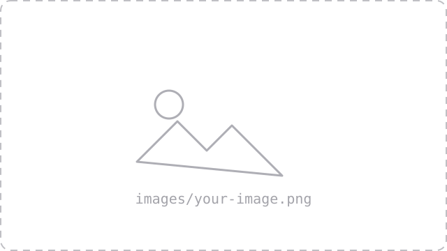

Slide deck title
Subtitle or one-line framing.
Agenda
- First topic
- Second topic
- Third topic
- Fourth topic
A single statement, centered
Use .center when the slide carries one idea.
Heading with a paragraph
One or two sentences of plain prose. Put the claim in the sentence, and use strong for the words you'll land on out loud.
A second, quieter line for the caveat or the aside.
Text beside an image
The text column. Keep it to a short paragraph or a few bullets — the picture is doing half the work.

One picture, full width
Try it yourself
developer.mozilla.org/en-US/docs/Web/HTML
One line on what's behind the link.
Two parallel lists
- First item
- Second item
- Third item
- Fourth item
- Fifth item
- Sixth item
Two cards
First card
A line of detail.
Second card
A line of detail.
Two cards with code
A link
<a href="/cart">Cart</a>
A line of detail.
A button
<button>Add to cart</button>
A line of detail.
The course in numbers
Classes
Weeks
5:00 PM
In person
What each week covers
First week's topic
One line on what it builds toward.
Second week's topic
One line on what it builds toward.
Third week's topic
One line on what it builds toward.
Name Surname
Role @ Company · what you bring to the room
Your first HTML file
<!DOCTYPE html>
<html lang="en">
<head>
<meta charset="utf-8">
<title>Hello</title>
</head>
<body>
<h1>Hello, web</h1>
</body>
</html>
A text editor, a browser, File → Open. Nothing else.
How we got here
1990 — First event
One or two sentences on what happened and why it matters.
2000 — Second event
One or two sentences on what happened and why it matters.
2010 — Third event
One or two sentences on what happened and why it matters.
What is the highlighted part?
h1 {
color: red;
}
Answer
A property. red is its value.
Recap
The single sentence you want them to leave with.
Next lecture: …